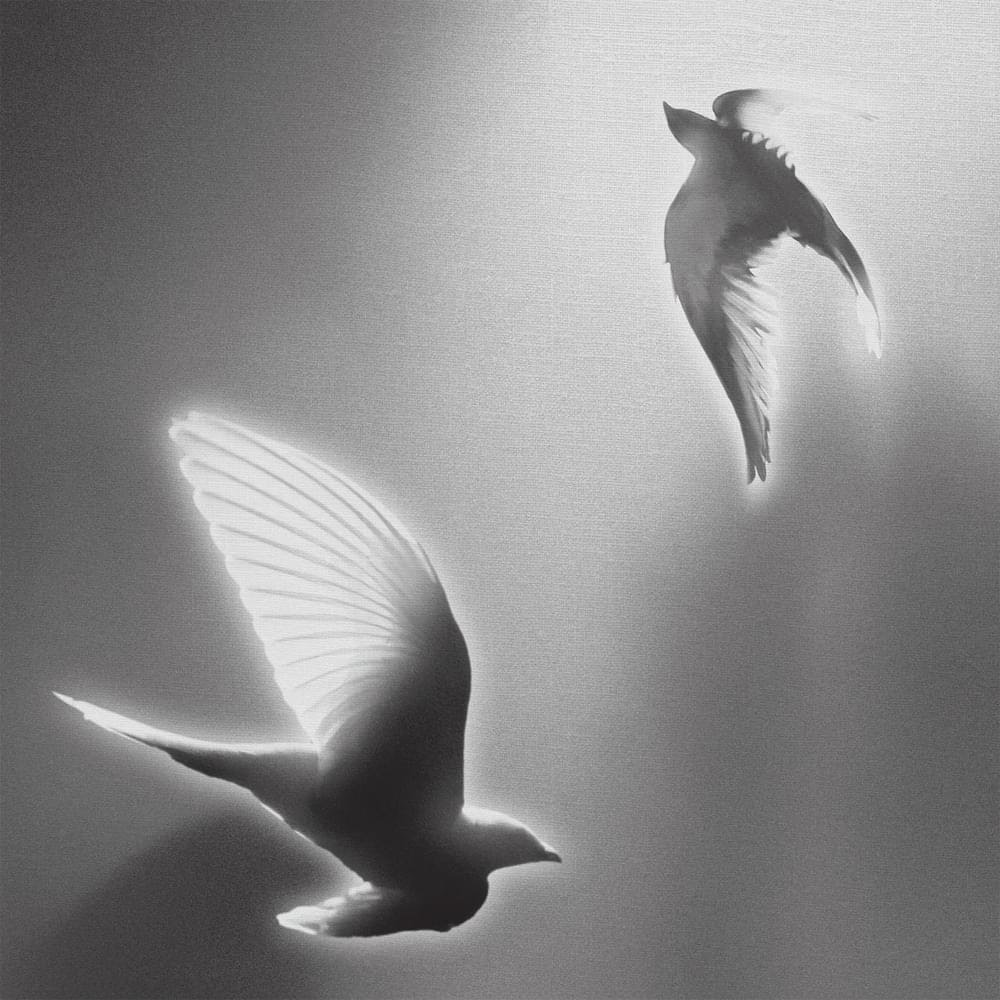

everything u are
Artist: Hindia
Album: Doves, '25 on Blank Canvas
Year: 2025
[Verse 1]
Wajahmu kuingat selalu
Lupakan hal-hal yang menggangguku
Karena hari ini mata kita beradu
Kita saling bantu melepas perasaan
[Pre-Chorus]
Tinggi ke angkasa, menantang dunia
Merayakan muda ‘tuk satu jam saja
Kita hampir mati dan kau selamatkan aku
Dan ku menyelamatkanmu dan sekarang aku tahu
[Chorus]
Cerita kita tak jauh berbeda
Got beat down by the world, sometimes I wanna fold
Namun suratmu kan kuceritakan ke anak-anakku nanti
Bahwa aku pernah dicintai with everything you are
Fully as I am with everything you are
[Verse 2]
Wajahmu yang beragam rupa
Pastikan ku tak sendirian
Jalani derita, kau bawakan kisahmu
Aku mendengarkan, oh kita bergantian
[Pre-Chorus]
Bertukar nestapa, menawar trauma
Datang seadanya, terasku terbuka
Kita hampir mati dan kau selamatkan aku
Dan ku menyelamatkanmu dan sekarang aku tahu
[Chorus]
Cerita kita tak jauh berbeda
Got beat down by the world, sometimes I wanna fold
Namun suratmu kan kuceritakan ke anak-anakku nanti
Bahwa aku pernah dicintai
[Bridge]
Seada-adanya, sekurang-kurangnya
Walau sulit utarakan hatiku dengan indah
Walau jarang ku bernyanyi dengan cara yang indah
Tapi tak sekali pun kisahku pernah kau bantah
[Outro]
Cerita kita tak jauh berbeda
Got beat down by the world (beat down by the world), sometimes I wanna fold
Namun suratmu kan kuceritakan ke anak-anakku nanti
Bahwa aku pernah dicintai with everything you are
Fully as I am with everything you are
Lagu “Everything U Are” dari Hindia mengajarkan tentang menerima seseorang sepenuhnya, dengan segala baik dan buruknya. Lewat lirik yang jujur dan lembut, lagu ini mengingatkan bahwa kasih sayang sejati bukan tentang mengubah, tapi memahami dan menghargai apa adanya. Ia menjadi penting bagi mereka yang dekat dengan kita, karena melalui lagu ini kita belajar melihat dan mencintai seseorang secara utuh.